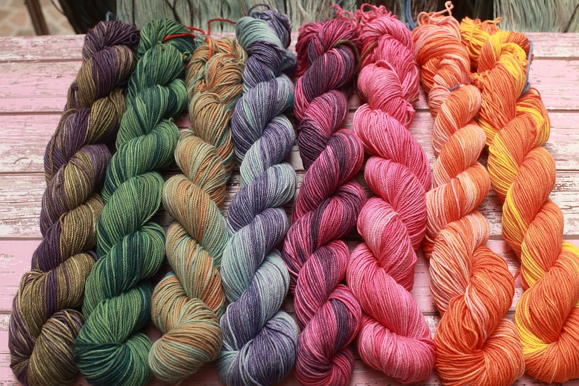
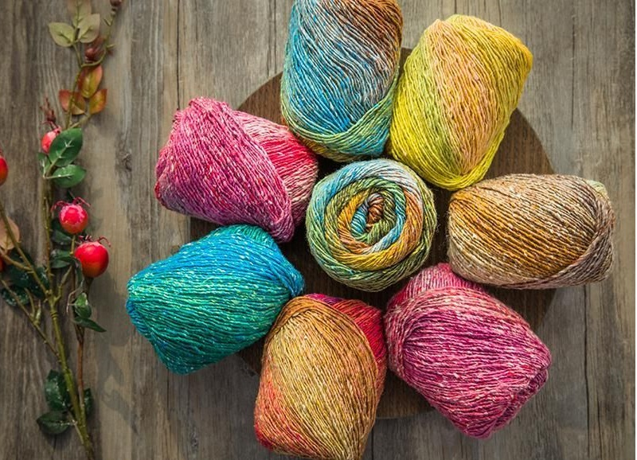

Our Products
Premium Cotton Yarn, Polyester Yarn, Blended Yarn & Specialty Yarn Manufacturer and Exporter from India.
Explore Collection
Premium Cotton Yarn, Polyester Yarn, Blended Yarn & Specialty Yarn Manufacturer and Exporter from India.
Explore CollectionExplore our wide range of premium quality yarns manufactured for knitting, weaving and textile industries.
We manufacture and export premium quality Cotton Yarn, Polyester Yarn, Blended Yarn and Specialty Yarns to customers worldwide.
Premium quality cotton yarn suitable for knitting, weaving and textile industries worldwide.
High strength polyester yarn designed for industrial textiles, garments and weaving applications.
Premium PC & PV blended yarn offering superior comfort, strength and durability.

PremiumColorfast dyed yarn available in cone, cheese and package dyed options.

SpecialInnovative fancy yarns including slub, core spun and decorative textile yarns.
 Eco Friendly
Eco Friendly
Certified organic cotton yarn manufactured using sustainable production methods.
We manufacture premium quality yarn with advanced technology, strict quality control and timely worldwide delivery.
Manufactured using high-grade raw materials for superior strength and consistent performance.
Successfully supplying yarn to textile manufacturers across multiple countries.
Export-grade packaging ensures products reach customers in perfect condition.
Reliable logistics and efficient production help us deliver every shipment on schedule.
Our premium quality yarn is widely used across various textile and manufacturing industries worldwide.
T-Shirts, Shirts, Jeans and Fashion Wear Manufacturing.
Premium knitting yarn for sweaters, hosiery and fabrics.
High-strength yarn suitable for weaving applications.
Bedsheets, Curtains, Towels and Home Furnishing Products.
Durable yarn for furniture fabrics and interior textiles.
Technical textiles and specialized industrial applications.
Partner with RS Textile for premium quality yarn, competitive pricing, export-grade packaging and on-time worldwide delivery.